刻行数据安全白皮书
我们深知您和贵公司对数据安全的高度重视，这正是我们设计产品、服务和功能时的核心考量。在刻行，我们始终将数据和隐私保护作为我们工作的首要任务。
我们的安全架构建立在一系列严密的控制措施之上。我们的网络安全和访问控制策略经过精心设计，严格遵循最小权限原则，确保只有授权用户才能访问必要的资源。我们的数据传输和存储过程采用了先进的加密技术，确保数据在静态和传输状态下的安全性。通过使用临时密钥（
Ephemeral Keys）和硬件安全模块（
Hardware Security Modules, HSMs
）支持的客户主密钥，我们进一步加强了数据传输和长期存储的元数据及配置数据的保护。
此外，我们实施了基于审计日志的监控和异常检测机制，这不仅使我们的团队能够实时、主动地识别并应对潜在的安全威胁，而且为贵公司在进行风险评估、访问审计等关键活动时提供了详尽的历史记录。
我们对业务的安全性和合规性有着前瞻性的规划和部署。我们的系统尊重并遵守数据所在地的法律法规，确保在没有用户明确同意的情况下，业务和敏感数据不会跨越其物理存储介质的地理位置。
作为领先的数据平台，我们致力于提供安全、透明、基于数据驱动的决策支持。本文旨在阐述刻行平台所采取的一系列安全措施，以期说明我们对数据存放的安全性和可靠性的承诺。
刻行从最初的设计就是为了能让刻行的产品和使用刻行产品的用户能有非常高级别的安全防护等级。我们大量利用了业界既定的成熟标准和协议来确保我们一流的产品安全和权限控制。

刻行服务和数据节点示意图
在刻行，数据链路安全是我们核心安全特性的基石，我们致力于确保用户数据在传输过程中的安全性和完整性。我们深知数据传输的每一个环节都至关重要，无论是用户与刻行服务的连接，还是刻行内部服务间的通信，我们都确保其安全性和可靠性。
加密与认证：
我们对每一个连接都实施了先进的加密措施，采用TLS 1.2、
SSH-2
和
IPSec
等协议，为数据传输提供坚不可摧的安全屏障。这些协议不仅保障了数据在传输过程中的安全性，也确保了数据的完整性。
数字证书：
刻行采用全球领先的企业数字证书提供商 DigiCert 签发的二级
CA
证书，这一举措确保了我们连接的身份验证和数据加密达到国际领先水平，为客户提供了最高标准的安全保障。
持续评估：
我们的专业团队定期对使用的连接进行评估和审查，确保所选用的加密算法和密钥验证方法始终符合当前的最佳安全实践。
安全监控与响应：
我们对依赖的关键工具，如OpenSSL
，实施持续的安全监控。一旦发现已知漏洞，我们能够迅速响应，部署必要的安全补丁，确保我们的软件和系统始终处于行业安全标准的前沿。
通过这些综合措施，刻行承诺为用户提供一个安全、可靠的数据传输环境。我们的目标是保护客户数据免受未授权访问和破坏，确保数据的安全性和业务的连续性。
在刻行平台中，我们对用户在使用过程中产生的数据保护工作给予最高优先级。这包括但不限于用户的配置细节、事务信息、审计记录等敏感数据。例如，定制的事件字段、用户事件、记录的原始信息以及活动日志等，均被严格地按照每个组织的需求进行分隔管理。我们确保用户在任何时间点都能根据需求进行数据的完整导出和删除，从而保障用户对自身数据拥有完全的控制权。
刻行平台对用户存储的所有数据实施了端到端的加密措施。这一措施确保了即便在极端情况下，如黑客绕过访问限制直接获取存储介质上的数据，这些数据由于经过了加密，也会变成无法解读的密文。没有相应的密钥，这些数据将无法被利用，而密钥本身则在数据服务的内存中受到严格的保护。
刻行平台对所有存储的数据执行静态加密处理。这意味着，在数据上传至刻行平台之前，它们已经在本地完成了加密过程。所有上传至平台的文件在本地加密后，才被安全地上传至对象存储。这一做法有效预防了数据在对象存储中被非法访问或破坏时可能发生的泄露风险。如需了解更多关于刻行的静态数据加密过程，请参阅我们的《
刻行数据安全方案
》。
刻行为用户提供完整的数据仓储（Data Warehousing
）隔离方案和数据所在地的选择，以满足用户及其企业在数据合规性、审查和本地化方面的需求。我们不仅提供当前的数据存储选项，还规划了未来的扩展方案，确保能够覆盖更广泛的地理位置和合规要求。刻行当前及计划提供的数据仓储地选项包括但不限于以下地区：
|
地区
|
区域
|
阿里云
|
Azure
|
AWS
|
|
中国大陆
|
上海
|
已支持
|
计划中
|
不适用
|
|
|
杭州
|
已支持
|
不适用
|
不适用
|
|
|
北京
|
计划中
|
计划中
|
计划中
|
|
|
宁夏
|
不适用
|
不适用
|
计划中
|
|
北美
|
Virginia - East US
|
不适用
|
已支持
|
计划中
|
|
|
Oregon - West US
|
不适用
|
已支持
|
计划中
|
|
|
California - West US
|
不适用
|
已支持
|
计划中
|
|
欧洲
|
Netherlands
|
不适用
|
计划中
|
计划中
|
|
|
Germany
|
不适用
|
计划中
|
计划中
|
刻行致力于提供业界领先的监管标准和透明度水平。我们通过提供一系列用户友好的工具，使用户能够轻松地监控和审查系统活动。这些工具包括但不限于：
•
事务级日志
：记录每一笔交易的详细情况，确保交易的可追溯性。
•
用户行为追踪
：监控用户在平台上的每一步操作，提高行为的透明度。
•
事件操作记录
：详细记录所有事件的操作历史，便于问题追踪和分析。
•
数据操作记录
：记录对数据的每一次操作，保障数据的完整性和一致性。
所有这些信息均可通过刻行平台直接向用户管理员公开，确保了操作的可见性和透明性，从而增强了用户对平台的信任。
对于对安全性有更k
高要求的客户，刻行进一步提供类似于云供应商级别的操作日志服务。这不仅满足了客户在合规性、监管和安全保障方面的高标准需求，也展示了我们对客户安全需求的深刻理解和承诺。
通过这些高级日志服务，客户能够获得更深层次的系统活动洞察，从而在复杂的安全环境中保持领先。
刻行平台目前支持通过钉钉和飞书这两种广泛使用的第三方服务进行登录，为用户带来便捷的同时，也确保了登录过程的安全性。此外，我们还提供了基于电子邮箱的一次性密码登录方式，以满足不同用户的需求。
我们致力于不断扩展和丰富我们的登录选项。未来，我们计划集成更多第三方登录供应商，以提供更多样化的登录途径。同时，我们也在积极推进支持SAML
等单点登录（
SSO
）方式的集成工作，预计在不久的将来就能与用户见面。
我们鼓励用户采用单点登录方法，这不仅能简化登录流程，提高用户体验，还能通过减少密码的使用，降低因密码泄露带来的安全风险，从而提升整个系统的安全性和可靠性。
刻行平台内建了一套强大的基于角色的访问控制系统（RBAC
），它赋予管理员在组织、仓库和项目等多个层级上对企业内部人员访问特定资源的精确控制能力。这一系统设计旨在满足不同规模和需求的企业对于数据访问管理的复杂要求。
我们的系统提供了一系列预定义的标准角色模板，使用户能够快速地进行初始配置，从而节省时间并减少配置错误。这些模板覆盖了常见的职责和权限需求，为用户带来了即插即用（
plug-and-play）的便利性。
更为重要的是，刻行的RBAC
系统还允许组织管理员在这些标准模板的基础上进行定制化设置。这意味着用户可以根据自己的特定需求，对角色的权限进行微调，实现更加精细的访问控制。
为了帮助用户更好地利用这一系统，我们的产品文档中包含了关于基于角色的访问控制的详细说明和指南。通过阅读这些资料，用户可以深入了解如何配置和优化自己的访问控制策略，确保企业资源的安全性和合规性。
审计日志的匿名化与智能监控
刻行平台对用户的审计日志执行匿名化处理，以保护用户的隐私和数据安全。同时，我们运用先进的模式检测技术，对日志进行深入分析，以识别潜在的数据隐患和异常行为。
实时告警与安全响应
一旦检测到如大量非白名单网段或常用网段之外的下载等可疑行为，我们的系统将立即触发告警机制，这些告警级别与云服务提供商级别和服务级别相匹配。这确保了在第一时间内，用户能够收到关于潜在安全威胁的通知。
内部安全审查
在通知用户的同时，刻行的内部安全审查团队将迅速介入，对可疑行为进行详尽的审核。我们的专家团队将运用其专业知识和技术手段，确保从程序到操作层面的安全性，同时最大限度地防范人为错误和外部入侵的风险。
刻行平台在确保数据安全和隐私方面采取了全面而严格的措施，这些在符合《通用数据保护条例》（GDPR）要求的同时，给用户提供一个安全、透明的数据环境。
客户数据是指通过刻行服务由我们的客户及其终端用户复制、传输、产生的任何信息，包括个人数据。
客户是客户数据的所有者和控制者，刻行是数据的处理者。在客户使用刻行服务期间，客户保留其账户中数据的所有权和控制权。
刻行在系统软件层面，通过多种方式帮助客户维护隐私和数据安全的控制：
1.
数据加密：我们对所有数据进行链路和存储加密，确保无论数据处于传输中还是存储状态，都得到充分的保护。通过使用先进的加密技术，我们确保数据在任何时候都不能在未授权的情况下访问。
2.
数据最小化：刻行严格执行数据最小化原则，只收集和存储必要的信息，并避免处理任何个人身份信息（PII
）。这种做法减少了数据泄露的风险，同时保证了我们服务的高效性。
3.
访问控制：我们实现了严格的访问控制机制，确保只有授权用户才能访问系统中的敏感数据。这种基于权限的控制体系保障了数据的安全性，同时也支持了合规性的要求。
4.
数据掩码和伪名化：我们对不同用户和系统显示的数据实施不同级别的掩码或伪名化处理，以保护敏感数据不被非授权用户访问。
5.
日志和监控：刻行提供全面的日志记录和监控系统，实时跟踪和记录用户操作和系统事件，以便于进行安全审计和及时发现潜在的安全威胁。
6.
数据可擦除和可携带：我们支持数据的完全擦除和携带，使用户能够在需要时删除其在我们系统中的所有信息，或将数据转移到其他服务提供商。
7.
隐私设置和显示通知：刻行提供清晰的隐私设置选项和通知，使用户完全了解他们的数据如何被收集、处理和保护。这种透明度不仅帮助用户放心使用我们的服务，也增强了他们对我们的信任。
除了在系统设计上的缜密考量，我们还制定了一系列严格的流程和制度，旨在最大程度地减少组织内个体人因对系统功能和决策的影响。以下是我们的主要措施：
1.
功能上线前的隐私影响评估：在任何新功能上线前，我们进行详尽的隐私影响评估，以识别和缓解可能对用户隐私产生的影响。这个评估过程涉及跨部门合作，确保从多角度考虑潜在的隐私风险，并采取适当的措施以预防数据泄露和滥用。
2.
数据保留政策：刻行根据法律要求和业务需求制定并严格执行数据保留和删除政策。例如，对于不再使用产品的用户，我们有明确的数据保留政策，确保在一定时间后删除用户数据，从而降低长期存储数据可能带来的风险。
3.
事故响应计划：我们有一套完善的事故响应机制来应对数据泄露和其他安全事件。这包括从事故发生的初期阶段到后期的恢复和赔偿。我们的目标是尽快控制损失，恢复正常运营，并根据情况向受影响的用户提供必要的赔偿和支持。
4.
第三方审计：刻行定期邀请外部安全专家和审计团队进行第三方安全审计。这些独立的评估有助于我们识别潜在的安全漏洞和合规风险，确保我们的安全措施和合规性始终处于最佳状态。
5.
员工培训：我们对员工进行定期的数据安全和隐私保护培训，以提高他们对数据保护重要性的认识，并确保他们了解最新的安全实践和公司政策。这种培训不仅包括基本的数据处理指南，还涵盖了如何识别和防止潜在的安全威胁。
刻行在 GDPR
合规性和数据安全方面的努力倾注了我们对保障客户数据的无限热情。通过结合先进的系统安全措施（如全面的数据加密和严格的访问控制）与细致的组织策略（包括员工培训、隐私评估和第三方审计），我们致力于在所有层面上符合甚至超越
GDPR
的标准。系统软件和人因管理双管齐下不仅加强了内部团队对数据安全的重视，也确保了我们系统的坚固防护。刻行的目标是为用户提供一个既安全又可靠的数据环境，确保每一位用户的数据得到最全面和最先进的保护，并成为业界数据安全和隐私保护的践行者。
如果存储用户数据的数仓权限被泄露，例如，在混合云模式中，本地数仓权限泄露
•
在刻行中，所有存储于数仓的数据均经过严格的加密和哈希处理，因此即使数仓的权限被泄露，也不会直接导致数据的可读性。暴力破解AES256
加密算法所需的时间远远超过地球已存在的时间，因此这些加密数据的安全性是极其可靠的（注
1
）。
•
用户信息和隐私数据方面，刻行依赖国内领先的钉钉和飞书登录体系，因此我们不存储任何可以追溯到用户具体身份的信息。即便刻行服务器遭到攻击，恶意入侵者也只能获取到非敏感的信息，如随机用户
ID、记录的元信息、事件的元信息等。他们无法从刻行服务器中直接获取存储于数仓中的敏感数据。
•
刻行利用用户选择的云服务密钥管理服务（例如阿里云的KMS
）来加密数据。因此，即使数仓和刻行执行数据库的数据都被泄露，没有相应的密钥，入侵者仍无法解密和查看用户数据。
入侵者同时获取了刻行的执行数据库，数仓的数据，以及云服务厂商 KMS 的密钥
•
在这种极端情况下，刻行依靠云服务厂商提供的密钥管理服务，对密钥进行定期（设定为 N天）的轮换更新。因此，在完全泄露的情况下，最多也只会暴露
N
天内通过该密钥加密的数据。刻行将在泄露修复后，对受影响的数据进行重新加密和存储，以保障数据的安全。
1.
暴力破解 AES256：
https://scrambox.com/article/brute-force-aes/
2.
阿里云 KMS：
https://www.aliyun.com/product/kms
3.
刻行数据安全方案：https://coscene0.feishu.cn/wiki/wikcnPkxIAkhoAADeB2Etp4ugre